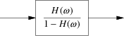

The output of pic is [gt]roff drawing commands. The GNU gpic(1) command warns that it relies on drawing extensions present in groff(1) that are not present in troff(1).
The DWB pic(1) program accepts one or two arguments to .PS, which is interpreted as a width and height in inches to which the results of pic(1) should be scaled (width and height scale independently). If there is only one argument, it is interpreted as a width to scale the picture to, and height is scaled by the same proportion.
GNU gpic is less general; it accepts a single width to scale to, or a zero width and a maximum height to scale to. With two non-zero arguments, it scales to the maximum height.
When pic processes a picture description on input, it passes .PS and .PE through to the postprocessor. The .PS gets decorated with two numeric arguments which are the X and Y dimensions of the picture in inches. The post-processor can use these to reserve space for the picture and center it.
The GNU incarnation of the ms macro package, for example, includes the following definitions:
.de PS
.br
.sp \\n[DD]u
.ie \\n[.$]<2 .@error bad arguments to PS (not preprocessed with pic?)
.el \{\
. ds@need (u;\\$1)+1v
. in +(u;\\n[.l]-\\n[.i]-\\$2/2>?0)
.\}
..
.de PE
.par@reset
.sp \\n[DD]u+.5m
..
Equivalent definition is supplied by GNU pic(1) if you use the −mpic option; this should make it usable with macro pages other than ms(1).
If .PF is used instead of .PE, the troff position is restored to what it was at the picture start (Kernighan notes that the F stands for “flyback”).
The invocation
.PS <file
causes the contents of file to replace the .PS line. This feature is deprecated; use ‘copy file’ instead).
By default, input lines that begin with a period are passed to the postprocessor, embedded at the corresponding point in the output. Messing with horizontal or vertical spacing is an obvious recipe for bugs, but point size and font changes are usually safe.
Point sizes and font changes are also safe within text strings, as long as they are undone before the end of string.
The state of [gt]roff’s fill mode is preserved across pictures.
The Kernighan paper notes that there is a subtle problem with complicated equations inside pic pictures; they come out wrong if eqn(1) has to leave extra vertical space for the equation. If your equation involves more than subscripts and superscripts, you must add to the beginning of each equation the extra information space 0. He gives the following example:
arrow
box "$space 0 {H( omega )} over {1 - H( omega )}$"
arrow

Figure 17-1: Equations within pictures
A pic picture is positioned vertically by troff at the current position. The topmost position possible on a page is not the paper edge but a position which is one baseline lower so that the first row of glyphs is visible. To make a picture really start at the paper edge you have to make the baseline-to-baseline distance zero, this is, you must set the vertical spacing to 0 (using .vs) before starting the picture.